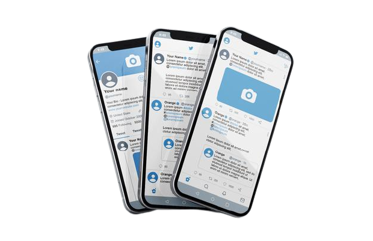
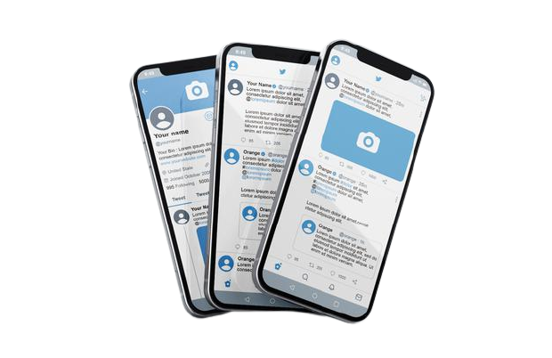

Твиттер — это сервис для обмена короткими частыми сообщениями. Общайтесь и оставайтесь на связи с друзьями, родными и коллегами. Пользователи публикуют твиты, которые могут содержать фотографии, видео, ссылки и текст. Эти сообщения появляются в вашем профиле, отправляются вашим читателям, их можно найти в поиске Твиттера.
Все зарегистрированные на официальном сайте пользователи «Твиттера» могут отправлять сообщения не длиннее 280 символов. В них может содержаться любая информация (новости, мнения, события, идеи), а также прикрепленные ссылки на страницы ресурсов (полезную информацию, новости, статьи, приколы и пр.). Особо популярны ссылки на видео и изображения (картинки, фото, приколы, музыку). Важными параметрами популярности пользователей являются число фоловеров и ретвитов их сообщения.
Твит — это публикуемое в Твиттере сообщение, которое может содержать фотографии, видео, ссылки и текст. Нажмите кнопку Твитнуть, чтобы опубликовать обновление в своем профиле. Более подробная информация приведена в статье о публикации твитов.
Фоловер (от английского follow — «следовать») — последователь, т. е. человек, следящий за сообщениями определенного пользователя ресурса. Если у вас много подписчиков, это означает, что им полезен и интересен предлагаемый вами контент.
Ретвит – публикация вашего сообщения другим пользователем, перенос на его страницу. Для повторения сообщения нужно нажать специальною кнопку Retweet или вставить до цитируемого сообщения буквы RT. Если сообщение цитируется, значит, что оно интересное и пользователи хотят поделиться им со своими подписчиками. Система ретвитов — это отличный способ популяризировать сообщение для друзей и друзей друзей.
Многомиллионная аудитория может донести одно сообщение до большого количества людей, если она посчитает его интересным и важным. По сути, «Твиттер» позволяет бесплатно рекламироваться среди современной, большой и мобильной аудитории.